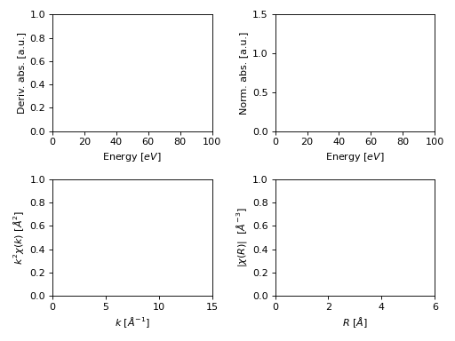
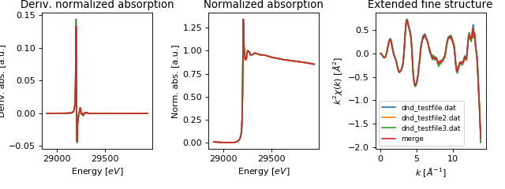

Plot module¶
The plot module offers classes and functions to preset Matplotlib axes for
plotting XAS spectra. The following functions are currently implemented:
Function |
Description |
|---|---|
Presets a plot of XAS spectra. |
|
Plot the results of pre-edge substratction and normalization. |
|
Plot the results of a merge operation. |
-
class
araucaria.plot.template.FigPars¶ Class dictionary with argument for plotting functions.
This utility class stores arguments to preset
Matplotlibaxes.- Parameters
prop_cycle (
list) – List of property cycle dictionaries for each axes. List is iterated if the elements of the list are less than the number of panels. See theset_prop_cycle()method for further details.e_range (
list) – XANES energy range.e_ticks (
list) – XANES energy tick marks.mu_range (
list) – XANES norm. abs. range.mu_ticks (
list) – XANES norm. abs. tick marks.dmu_range (
list) – XANES deriv norm. abs. range.dmu_ticks (
list) – XANES deriv norm. abs. tick marks.kweight (
int) – EXAFS k-weight.k_range (
list) – EXAFS wavenumber range.k_ticks (
list) – EXAFS wavenumber tick marks.chi_range (
list) – EXAFS chi(k) range.chi_ticks (
list) – EXAFS chi(k) tick marks.r_range (
list) – FT-EXAFS R range.r_ticks (
list) – FT-EXAFS R tick marks.chir_range (
list) – FT-EXAFS magnitude range.chir_ticks (
list) – FT-EXAFS magnitude tick marks.q_range (
list) – reverse FT-EXAFS wavenumber range.q_ticks (
list) – reverse FT-EXAFS wavenumber tick marks.
-
araucaria.plot.template.fig_xas_template(panels='xx', fig_pars=None, **fig_kws)¶ Returns a preset
Matplotlibfigure and axes object to plot XAS spectra.Panel elements (axes) are indexed in row-major (C-style order).
- Parameters
panels (
str) –Panels to plot. Valid arguments are as follows:
’d’ : derivative of XANES spectra.
’x’ : XANES spectra.
’e’ : EXAFS spectra.
’r’ : FT-EXAFS spectra.
’q’ : reverse FT-EXAFS spectra.
’/’ : Character for a new row.
The characters can be concatenated to produce multiple panels and rows. Examples: ‘dxe’, ‘xx’, ‘xer’, ‘xx/xx’.
fig_pars (
Optional[FigPars]) – Dictionary arguments for the figure. SeeFigParsfor details.fig_kws (
dict) – Additional arguments to pass to thesubplots()routine ofMatplotlib.
- Return type
- Returns
figure – Matplolib figure object.
axes – Matplotlib axes object.
- Raises
ValueError – If number of columns and rows do not match in
panels.ValueError – If requested panel type in
panelsis not recognized.
Example
>>> import matplotlib.pyplot as plt >>> from araucaria.plot import fig_xas_template >>> pars = {'e_range' : (0,100), ... 'mu_range': (0,1.5), ... 'k_range' : (0,15), ... 'r_range' : (0,6)} >>> fig, axes = fig_xas_template('dx/er', fig_pars=pars) >>> plt.show(block=False)
(Source code, png, hires.png, pdf)

{kind=link}
{kind=link}
-
araucaria.plot.fig_pre_edge.fig_pre_edge(group, show_pre_edge=True, show_post_edge=True, fig_pars=None, **fig_kws)¶ Plots the results of pre-edge substraction and normalization of a scan.
- Parameters
group (
Group) – Group with the normalized scan.show_pre_edge (
bool) – Indicates if the pre-edge fit curve should be plotted. The detault is True.show_post_edge (
bool) – Indicates if the post-edge fit curve should be plotted. The detault is True.fig_pars (
Optional[FigPars]) – Dictionary arguments for the figure. SeeFigParsfor details.fig_kws – Additional arguments to pass to the
subplots()routine ofMatplotlib.
- Return type
- Returns
figure – Matplolib figure object.
axes – Matplotlib axes object.
- Raises
TypeError – If
groupis not a valid Group instance.AttributeError – If attributes from
pre_edge()do not exist ingroup.
Notes
The returned plot contains the original \(\mu(E)\), the adjusted pre-edge and post-edge curves (optional), and the normalized and flattened \(\mu(E)\).
See also
pre_edge()Pre-edge substaction and normalization of a scan.
Example
>>> import matplotlib.pyplot as plt >>> from araucaria.testdata import get_testpath >>> from araucaria.io import read_dnd >>> from araucaria.xas import pre_edge >>> from araucaria.plot import fig_pre_edge >>> fpath = get_testpath('dnd_testfile.dat') >>> group = read_dnd(fpath, scan='mu') >>> pre = pre_edge(group, update=True) >>> fig, ax = fig_pre_edge(group) >>> plt.show(block=False)
(Source code, png, hires.png, pdf)

{kind=link}
{kind=link}
-
araucaria.plot.fig_merge.fig_merge(merge, collection, pre_edge_kws=None, autobk_kws=None, fig_pars=None, **fig_kws)¶ Plots the results of a merge operation in a collection.
- Parameters
merge (
Group) – Group with the merged scan.collection (
Collection) – Collection with the merged groups.pre_edge_kws (
Optional[dict]) – Dictionary with arguments for normalization.autobk_kws (
Optional[dict]) – Dictionary with arguments for background removal.fig_pars (
Optional[FigPars]) – Dictionary arguments for the figure. SeeFigParsfor details.fig_kws – Additional arguments to pass to the
subplots()routine ofMatplotlib.
- Return type
- Returns
figure – Matplolib figure object.
axes – Matplotlib axes object.
- Raises
TypeError – If
collectionis not a valid Collection instance.TypeError – If
mergeis not a valid Group instance.AttributeError – If attribute
merged_scansdoes not exist inmerge.AttributeError – If any attribute listed
merged_scansdoes not exist incollection.
Notes
The returned plot contains the original signals and merged signal in both normalized \(\mu(E)\) and \(\chi(k)\).
Important
Optional arguments such as
pre_edge_kwsandautobk_kwsare used to calculate the normalized \(\mu(E)\) and \(\chi(k)\) signals. Such parameters have no effect on the merge operation.By default legends are not included in the figure. However they can be requested for any axis (see Example).
See also
merge()Merge groups in a collection.
Example
>>> import matplotlib.pyplot as plt >>> from araucaria import Collection >>> from araucaria.testdata import get_testpath >>> from araucaria.io import read_dnd >>> from araucaria.xas import merge >>> from araucaria.plot import fig_merge >>> collection = Collection() >>> files = ['dnd_testfile.dat' , 'dnd_testfile2.dat', 'dnd_testfile3.dat'] >>> for file in files: ... fpath = get_testpath(file) ... group_mu = read_dnd(fpath, scan='mu') # extracting mu and mu_ref scans ... collection.add_group(group_mu) # adding group to collection >>> report, merge = merge(collection) >>> fig, ax = fig_merge(merge, collection) >>> leg = ax[2].legend(fontsize=8) >>> plt.show(block=False)
(Source code, png, hires.png, pdf)

{kind=link}
{kind=link}